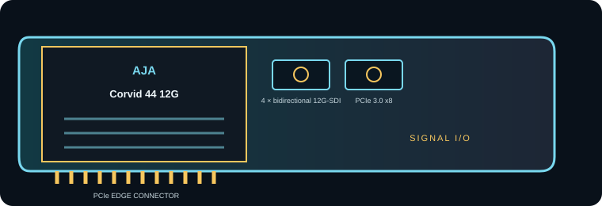

[ INDIVIDUAL COMPONENT // EXPANSION CARDS ]
AJA Corvid 44 12G
Four-channel bidirectional 12G-SDI PCIe I/O for professional capture, monitoring and playback systems. This is a model-specific reference; verify the board revision and full specifications against the official sources before installation.

IDENTIFICATION: Match the silkscreen/model marking, part number, board revision and bracket to manufacturer documentation. Port direction, supported formats and driver behavior can vary by model revision and software release.
Capture, playback and compatibility specifications
| Exact model | Corvid 44 12G |
|---|---|
| Bus / host interface | PCI Express 3.0 x8; verify the host provides eight usable lanes and cooling/slot clearance for the chosen full-height or low-profile card configuration. |
| Capture / playback interface | Four bidirectional 12G-SDI HD-BNC ports; each supports capture/output and multi-rate SDI down to 1.5G-SDI. |
| Resolution and frame-rate envelope | SD, HD, 2K, 4K/UltraHD and multi-link 8K workflows, with high-frame-rate modes subject to link mapping and host software. AJA documents support for 10-bit 4:2:2 and 4:4:4 and color spaces up to 12-bit. |
| Pixel format and codec handling | SDI frame I/O is uncompressed; no onboard file codec is specified. Software/SDK determines pixel packing and whether files are recorded as uncompressed, ProRes, DNx or another codec. |
| Host compatibility | Designed for OEM/developer integration using AJA drivers and SDKs; use a supported Windows, Linux or macOS software version and confirm the application supports this Corvid model. |
| Limitations and installation checks | High-raster and 8K paths use multiple links and demand high sustained host bandwidth. Distinguish HD-BNC from full-size BNC and use correct 12G-rated cabling; reference/firmware and link mapping are workflow-dependent. |
Integration notes and limitations
- Measure available PCIe lanes and sustained host/storage bandwidth; mechanical slot length alone does not guarantee the electrical link width needed by the card.
- Confirm that source timing, signal standard, cable, reference, pixel format, channel mapping and software configuration agree before recording or playback.
- Record driver/firmware versions, operating system, application, breakout/accessory part numbers and tested mode. Update only with a recovery plan for mission-critical rigs.
- High-raster and 8K paths use multiple links and demand high sustained host bandwidth. Distinguish HD-BNC from full-size BNC and use correct 12G-rated cabling; reference/firmware and link mapping are workflow-dependent.
For codec planning, distinguish a video transport/interface and raw pixel format from a compressed media-file codec. A supported capture application may encode a file format that the card itself does not encode.
Manufacturer sources and support
- AJA — Corvid 44 12G manufacturer technical/product informationProduct-line technical reference; consult the exact model format and interface table for the required mode.
- AJA — AJA Corvid 44 12G support and downloadsOfficial support, driver or release-note resource; operating-system and software compatibility can change by release.
Manufacturer documentation for the precise hardware revision takes precedence over generic workflow or family-level guidance.